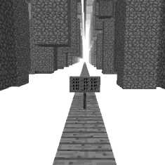

"JUMP JUMP JUMP
JUMP JUMP JUMP
JUMP JUMP JUMP"
- Oak Signs

Inconsistency is a safe, Void type Layer 0 dimension and is one of the two possible entrance dimensions leading to the Wonderland[D]. The primary method of reaching here is by sleeping. Every night there is an unknown chance that the recipient of the bed will be transported here.
The layout consists of various flying monoliths, all constructed from basic cobblestone. The only grounding one can find here is a series of infinitely stretching 1-block wide oak plank bridges.
Signs can be found littered on these bridges, having various texts written on them. The exit to this dimension is simple. In order to leave, simply jump down to the void below. This will take you to the Wonderland[D]. This is the only known way to exit.
Threat level: 0
Layer: 0
Name: Inconsistency
Type: Void